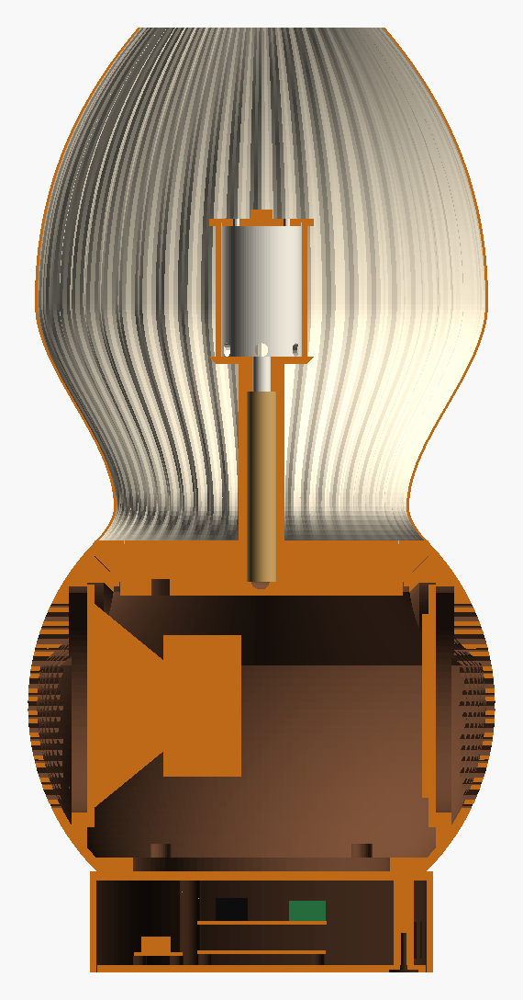
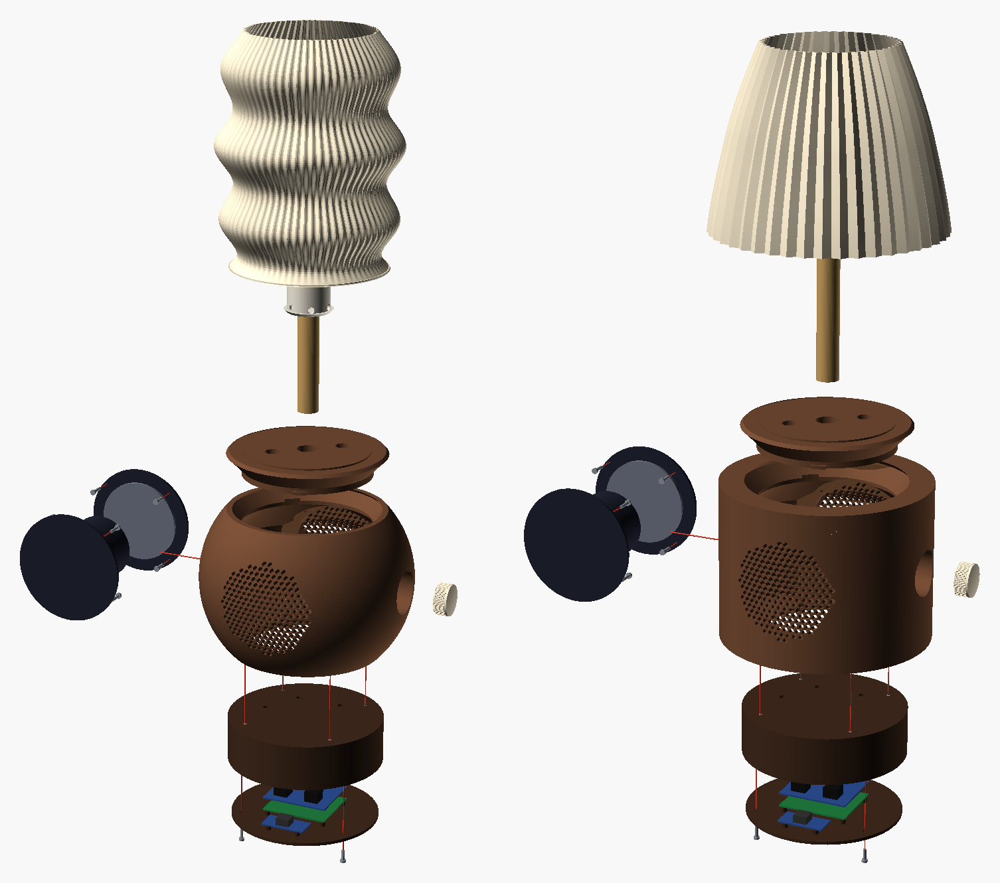
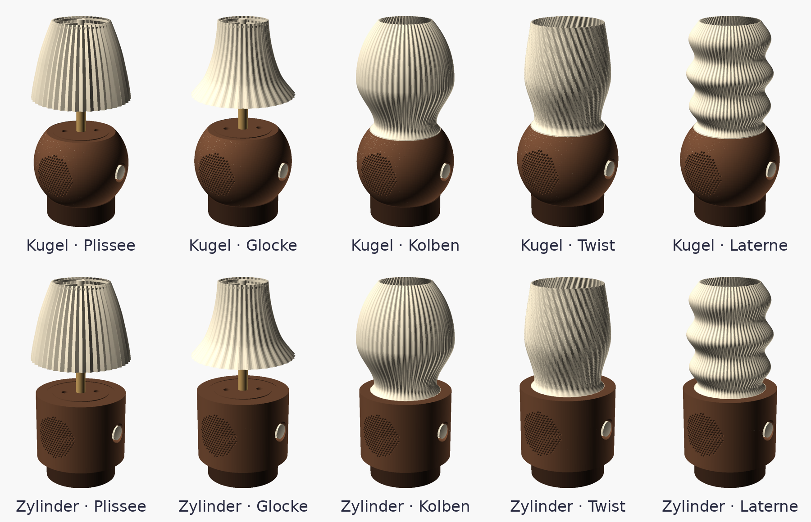
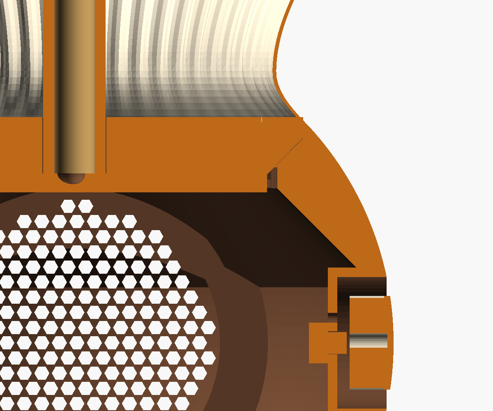

Bauanleitung · Version November 2026
Soundlampe
Schlafgeräusche, Musik, Wecker und Licht in einer Nachttischlampe. Alles, was du zum Bauen, Verkabeln und Einrichten brauchst.
2Überblick: wie die Lampe aufgebaut ist
3Einkaufsliste
4Stromlaufplan
5Pinbelegung und Lochraster-Platine
6Elektronikfach
7Lichtkern und LEDs
8Zusammenbau Schritt für Schritt
10Software und Home Assistant
11Sound-Design
13Wecker, Fehlersuche
Überblick
Drei Etagen in einem Fuß

Aufgeschnitten: Elektronik unten, Lautsprecherkammer in der Mitte, Licht oben
Der Fuß (Kugel Ø 204 mm oder Zylinder Ø 190 mm, beide 188 mm hoch) ist innen in drei Bereiche geteilt. Jeder hat eine eigene Aufgabe, und keiner stört den anderen.
Elektronikfach (unten)
Raspberry Pi 3 A+ mit aufgestecktem DigiAMP+ (Verstärker), der LM2596 für 5 V, eine kleine Lochraster-Platine für die LED-Daten und die DC-Buchse. Lüftungsschlitze in der Bodenplatte, Gummifüße lassen Luft drunter.
Lautsprecherkammer (Mitte, gut 2 l)
Luftdicht. Vorne der Breitbänder Dayton ND105-4, hinten die Passivmembran ND105-PR. Die Membran schwingt mit und liefert Bass wie ein Bassreflexrohr, aber ohne Strömungsgeräusche. 4 mm Wand und 8 Rippen machen die Kammer steif, Dämmung nimmt den Plastikklang weg. An der Seite sitzt der Drehknopf.
Licht (oben)
Ein Messingstiel trägt den Lichtkern: eine Spule, um die 30 RGBW-LEDs als Spirale gewickelt sind. Darüber der Schirm aus transluzentem Filament. Das LED-Kabel läuft unsichtbar durch den Stiel, einen Kanal im Deckel und durch die Kammer nach unten. Die Durchführungen werden mit Silikon abgedichtet.

Kugel und Zylinder: gleicher Sockel, gleicher Deckel, Knopf und Lichtteile
Teile
Einkaufsliste
Alles, was du für eine Lampe brauchst. Die Kästchen sind zum Abhaken beim Bestellen.
| Teil | Genau dieses | Wofür |
|---|
| ○ | Raspberry Pi 3 Model A+ | 65 × 56 mm, WLAN | rechnet die Sounds, MQTT, Licht |
| ○ | Raspberry Pi DigiAMP+ | 2 × 35 W, 12–24 V | Verstärker, versorgt auch den Pi |
| ○ | Netzteil | 19 V / 3,42 A, Stecker 5,5 × 2,5 | Strom für alles |
| ○ | DC-Einbaubuchse | 5,5 × 2,5 mm | hinten unten am Fuß |
| ○ | LM2596-Modul | Step-down, ca. 43 × 21 mm | 19 V → 5,1 V für die LEDs |
| ○ | LED-Strip | SK6812 RGBWW warmweiß, 60/m, IP30, 5 V | 0,5 m = 30 LEDs am Lichtkern |
| ○ | 74AHCT125 | DIP-14, am besten mit Sockel | hebt das LED-Signal auf 5 V |
| ○ | Elko | 1000 µF / 10 V (oder 16 V) | puffert die LED-Versorgung |
| ○ | Widerstand | 330 Ω aus dem Sortiment | in der Datenleitung |
| ○ | Drehgeber | EC11 mit Taster | Lautstärke, Sounds an/aus, Wecker aus |
| ○ | Lochraster-Set | daraus ein Stück 30 × 70 mm schneiden | Pegelwandler-Platine |
| ○ | Abstandsbolzen | M2,5 × 11 mm, 4 Stück | DigiAMP+ auf dem Pi |
| ○ | Breitbänder + Passivmembran | Dayton ND105-4 und ND105-PR | Klang |
| ○ | Dichtband | Moosgummi 3 mm | Kammer abdichten |
| ○ | Litzen | 0,5 mm² rot/schwarz (Strom), 0,14–0,25 mm² bunt (Signale) | Verkabelung |
| ○ | Jumperkabel | Buchse-Buchse, 10 cm | Anschluss an die Stiftleiste |
| ○ | microSD | 32 GB, A1 | Betriebssystem |
| ○ | Gewindeeinsätze, Schrauben | selbstschneidend BT3 × 12 (8), BT3 × 10 (7), BT2.6 × 6 (2), Abstandsbolzen M2,5 × 11 (4) + M2,5 × 5 (4), keine Gewindeeinsätze | Gehäuse, Platinen |
| ○ | Messingrohr | Ø 20 mm, 150 mm (oder gedruckter Stiel) | Lampenstiel |
| ○ | Dämmung | Polyesterwatte ca. 20 g, Alubutyl 2 mm | Kammer |
| ○ | Filament | ca. 600 g PETG dunkel, 150 g transluzent | Fuß und Schirm |
Werkzeug: Lötkolben mit feiner Spitze, Multimeter (für den LM2596 unbedingt), Seitenschneider, Abisolierzange, Heißluft oder Lötkolben-Aufsatz für die Gewindeeinsätze, Schrumpfschlauch.
Verkabelung
Stromlaufplan
Rot ist 19 V, orange 5,1 V, schwarz Masse (GND), blau Signale, lila Lautsprecher. Alle Massen sind miteinander verbunden.
So fließt der Strom
- Das Netzteil (19 V) steckt hinten in der DC-Buchse. Von dort gehen zwei Wege ab.
- Weg 1: ein kurzes Kabel mit Hohlstecker 5,5 × 2,5 in die Buchse des DigiAMP+. Der DigiAMP+ macht daraus seine eigene Versorgung und gibt 5 V über die Stiftleiste an den Pi weiter.
- Weg 2: an IN+ und IN– des LM2596. Er macht 5,1 V für die LEDs. Die 5,1 V gehen auf die Lochraster-Platine und von dort zum Strip.
- Das LED-Signal kommt vom Pi (Pin 19), wird im 74AHCT125 auf 5 V gehoben und geht über 330 Ω zum Eingang DIN des Strips.
Wichtig: Den LM2596 zuerst allein an 19 V anschließen und mit dem Multimeter am Ausgang auf 5,1 V drehen (kleines Messing-Poti). Ab Werk liefert er oft deutlich mehr, das würde die LEDs zerstören. Und: kein USB-Netzteil am Pi anstecken, der Pi bekommt seinen Strom nur vom DigiAMP+.
Innenleben
Elektronikfach

Bodenplatte von schräg oben: Platine links, Pi mit DigiAMP+ in der Mitte, LM2596 vorne, DC-Buchse hinten
Der Turm aus Pi und Verstärker
Der Pi 3 A+ wird auf die 4 kurzen Dome der Bodenplatte geschraubt. Auf seine Befestigungslöcher kommen 4 Abstandsbolzen M2,5 × 11 mm, darauf der DigiAMP+, der mit seiner Buchsenleiste auf die Stiftleiste des Pi gesteckt wird. Oben am DigiAMP+ ist die Stiftleiste durchgeführt. Dort kommen die Jumperkabel für LEDs und Drehknopf drauf.
Bis zur Sockeldecke bleiben etwa 7 mm Luft. Unter dem Pi sind 5 mm Luft für die Kühlung.
LM2596 und Platine
Der LM2596 sitzt vorne auf 4 Domen (zwei diagonale Schrauben reichen). Die Lochraster-Platine klebt mit Schaumklebeband links neben dem Pi. Die Kabel zum LED-Strip kommen von oben durch die Sockeldecke.
Die Lautsprecherkabel kommen durch die Sockeldecke und gehen an die Schraubklemme des DigiAMP+ (nur ein Kanal, z. B. links; die Software spielt mono).
Licht
Lichtkern und LEDs

Von unten nach oben: Messingstiel mit Kabel, Lichtkern mit LED-Spirale, Kerndeckel
Aufbau
- Lichtkern: hohle Spule, Ø 40 mm (Umfang 126 mm), steckt oben auf dem Stiel. Unten 6 Lüftungslöcher, oben im Kerndeckel 8. Warme Luft zieht so nach oben ab.
- Spirale: 0,5 m Strip mit 30 LEDs in 4 Windungen, 15 mm Steigung. Die LEDs zeigen nach außen und leuchten den Schirm rundum gleichmäßig an, ohne dunkle Streifen.
- Richtung: Anfang (DIN) unten. Die Pfeile auf dem Strip zeigen nach oben, vom Anschluss weg.
- Kabel: 3 Adern (rot 5 V, schwarz GND, blau Daten). Am Strip-Anfang durch ein Loch in den Kern, durch den Stiel, den Kanal im Deckel und die Kammer nach unten.
Strom und Wärme
Warmweiß nutzt vor allem den weißen Kanal: etwa 20 mA pro LED, 0,6 A bei voller Helligkeit. Die Software begrenzt auf 70 %, damit es im Schirm kühl bleibt.
Was das Licht kann
- Warmweiß dimmbar, 1800–6500 K, dazu Farben
- Sonnenaufgang: 5–60 min von dunkelrot über orange zu warmweiß
- Kerze: jede LED flackert einzeln um 1800–2200 K
- Einschlafen: wird mit dem Sleep-Timer dunkler
Schirme

Plissee, Glocke, Kolben, Twist und Laterne. Kolben, Twist und Laterne stehen direkt in der Ringmulde des Deckels und laufen bündig aus der Kugel, Plissee und Glocke hängen an einer Spinne.
Montage
Zusammenbau Schritt für Schritt
Mit Bildern zu jedem Schritt, Schrauben in Originalgröße und den Stiellängen je Schirm: Soundlampe_Montageanleitung.pdf (gleicher Ordner). Hier die Kurzfassung, sie gilt für Kugel und Zylinder.

Explosionszeichnung
- Drucken. Den passenden Ordner aus
hardware/pakete/ nehmen, dort liegen alle STL und die Druckeinstellungen. Schirm aus transluzentem Filament.
- Lautsprecher von innen: Breitbänder vorne, Passivmembran hinten durch die offene Unter- oder Oberseite einführen und mit je 4 × BT3 × 12 in die inneren Schallwände schrauben (kurzer Schraubendreher oder Bit-Ratsche). Flansche mit Moosgummi dichten, Kabel vorher anlöten (rot = +). Das Lochfeld ist in die Wand gedruckt.
- Drehgeber von innen durch den Boden der Knopfmulde, Mutter in der Mulde anziehen, Knopf aufstecken. 5 Litzen anlöten.
- Körper auf den Sockel: Kabel durch die Löcher in der Sockeldecke, mit Silikon dichten, Körper von unten mit 4 × BT3 × 10 anschrauben.
- Dämmen: Alubutyl an die großen Kammerwände, Polyesterwatte locker hinein. Breitbänder und Membran frei lassen.
- LED-Kabel: Einen Draht als Zugband von oben durch Stiel, Deckelkanal und Kammer schieben, 3-adriges Kabel durchziehen. Deckel mit Moosgummi-Ring einsetzen und eine Drittel-Drehung im Uhrzeigersinn drehen (Bajonett, keine Schrauben).
Montage
Zusammenbau, Teil 2
- Lichtkern: Strip spiralförmig um den Kern kleben, Anschluss unten. Kabel anlöten (rot an +5V, schwarz an GND, blau an DIN), mit Schrumpfschlauch isolieren. Kern auf den Stiel, Kerndeckel drauf.
- LM2596 einstellen: allein an 19 V, Multimeter an OUT+ und OUT–, Poti drehen bis 5,1 V. Erst dann weiter.
- Platine löten nach dem Plan auf Seite 5. IC-Sockel einlöten, Chip zuletzt einstecken (Kerbe nach links).
- Pi und DigiAMP+: Pi auf die 4 kurzen Dome, Bolzen drauf, DigiAMP+ aufstecken und verschrauben. microSD (fertig eingerichtet, siehe Seite 10) einstecken.
- Verkabeln nach dem Stromlaufplan: DC-Buchse → DigiAMP+ und LM2596. LM2596 → Platine. Platine → LED-Kabel. Jumperkabel vom Pi zu Platine und Drehgeber. Lautsprecher an die Klemme des DigiAMP+.
- Erster Test mit offener Bodenplatte: Netzteil einstecken. Nach etwa einer Minute erscheint die Lampe in Home Assistant. Licht an, Sounds an, Knopf drehen und drücken.
- Schließen: Bodenplatte mit 3 × BT3 × 10 anschrauben, Gummifüße auf die Schraubenköpfe kleben. Plissee/Glocke: Spinne auf den Stift des Kerndeckels, Schirm drüber. Kolben/Twist/Laterne: Schirm in die Ringmulde des Deckels stellen.

Schnitt: Knopf bündig in der Mulde, Deckel bündig in der Kugel, Schirm läuft ohne Absatz weiter
Noch am echten Teil nachmessen: den Lochkreis der Lautsprecherschrauben und die Lochabstände deines LM2596. Abweichungen in soundlampe.scad eintragen und die STL neu erzeugen.
Software
Software und Home Assistant
Pi einrichten
- Mit dem Raspberry Pi Imager „Raspberry Pi OS Lite (64-bit)“ auf die microSD schreiben. In den Einstellungen Hostname
soundlampe, Benutzer, WLAN und SSH setzen.
- Per SSH einloggen, Repo klonen und
sudo hardware/device/system/install.sh ausführen. Das richtet den DigiAMP+-Treiber, SPI für die LEDs, Python, den Dienst sleepgen und den Musikplayer (squeezelite) ein.
- In
/etc/sleepgen/config.yaml den MQTT-Benutzer eintragen (siehe unten), dann sudo reboot.
Home Assistant anbinden
| Schritt | Wie |
|---|
| MQTT | App Mosquitto broker installieren, Integration MQTT bestätigen |
| Benutzer für die Lampe | Einstellungen → Personen → Benutzer, z. B. sleepgen; Name, Passwort und HA-IP in config.yaml |
| Steuerung | Integration Dusk & Dawn über HACS installieren und beim Einrichten die Soundlampe als DIY-Gerät wählen. Dann gibt es Klänge, Wecker, Sonnenaufgang und Präsenz-Automatik in einer eigenen Seitenleiste. |
Sobald die Lampe läuft, legt sie alle Entitäten selbst an (MQTT Discovery): Sounds, Presets, Timer, ein Regler pro Klang, Lampe, Sonnenaufgang, Wecker, Weckton, Weckdauer und Wecklautstärke. Wer lieber ohne Integration arbeitet, findet im Ordner homeassistant/ ein Paket mit Helfern, Automationen und Dashboard.
Musik
Der Pi läuft zusätzlich als Squeezelite-Player. Music Assistant findet ihn automatisch als Lautsprecher „Soundlampe“. Dann kannst du Spotify, Radio oder eigene Musik auf die Lampe schicken. Musik und Sounds laufen gleichzeitig, auf Wunsch pausieren die Sounds automatisch.
Bedienung am Gerät
| Knopf | macht |
|---|
| Drehen | Gerätelautstärke (auch Musik) |
| Kurz drücken | Sounds an/aus. Klingelt der Wecker, stoppt er ihn. |
| Lange drücken (1,2 s) | Licht an/aus |
Klang
Sound-Design
Die Lampe spielt keine Aufnahmen ab. Jeder Klang wird live auf dem Pi berechnet. So gibt es keine hörbare Schleife, jede Ebene hat ihren eigenen Regler, und alles lässt sich mischen.
Teppich und Ereignisse
Fast jeder Naturklang besteht aus zwei Teilen: einem Teppich aus gefiltertem Rauschen, der den Raum füllt, und vielen kurzen Ereignissen, an denen das Ohr den Klang erkennt. Langsame Zufallskurven bewegen beides, damit nichts statisch klingt.
Drei Bausteine
Plip: kurzer Ton, der nach oben gleitet. So klingt eine Luftblase im Wasser, die kleiner wird: Tropfen, Blasen, Schaum.
Tick: Rauschstoß von 0,2–12 ms: Prasseln, Knistern, Knacken.
Blatt: weiches, helles Rauschschnipsel: Laub.

Frequenzverteilung der zwölf Klänge. Unter ca. 75 Hz (grau) strahlt ein 4"-Lautsprecher kaum noch ab, deshalb liegt der Charakter von Donner und Wellen darüber.